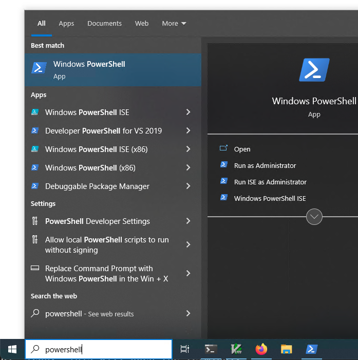
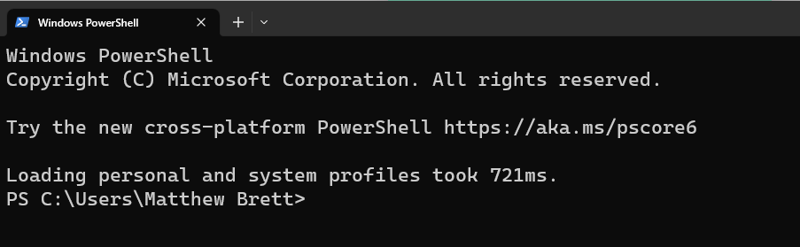

Installation on Windows#
Powershell#
Powershell is a Windows utility that allows you to type commands at a command line prompt. These types of applications are called terminals — because they used to be the main way the people interacted with computers via computer terminals.
Windows 10#
To start Windows Powershell on Windows 10:
Click on the Windows search bar, type “powershell”.

Notice that you want the “Windows Powershell” application, not “Windows Powershell ISE”.
Then press return to run Powershell, or select “Run as Administrator” if you need to run administrator commands. Usually prefer the normal mode (not administrator mode).
You should see a prompt a little like this:

Windows 11#
To start Windows Powershell on Windows 11, use “Windows Terminal”. It is the most convenient way to start Powershell. Follow one of the methods in this How-To Geek page. We recommend the second method: “From the Power User Menu”.
Chocalatey#
We suggest you use Chocolatey to install Git and Python.
Go to the Choclately install page and follow the instructions there. Choose the ‘individual’ install.
To do the install, as that page says, open a Powershell window with Administrator permissions. For example, press the Windows key, type “powershell”, right-click on the “Windows PowerShell” option, chose “Run as administrator”.
A Powershell window will open. Continue with the Choco install instructions, including checking, maybe setting the ExecutionPolicy.
Git and Python#
In the same, or a new Powershell administrator window, type:
choco install -y git python
Close the Powershell, and open it again, again with Administrator privileges.
To check the install, type:
get-command python
This should show something like this:
CommandType Name Version Source
----------- ---- ------- ------
Application python.exe 3.10.41... C:\Python310\python.exe
If, instead, you see a value for “Source” that starts
C:\Users\scipy\AppData\Local\Microsoft..., either your install has failed,
or you have forgotten to close and restart the Powershell window after doing
the choco install step. Just in case, do that now, and recheck the command
above.
Copy python.exe to python3.exe#
The long-hand way#
The output of get-command python above has shown you where Choco installed Python. For example, as you’ve already seen, I got:
CommandType Name Version Source
----------- ---- ------- ------
Application python.exe 3.10.41... C:\Python310\python.exe
If, instead, you see a value for “Source” that starts
C:\Users\scipy\AppData\Local\Microsoft ..., either your install has failed,
or you have forgotten to close and restart the Powershell window after doing
the choco install step. Just in case, do that now, and recheck the command
above.
In my case, as you see above, Python was at c:\Python310\python.exe
Go to the directory containing Python. In my case this was c:\Python310
cd c:\Python310
Then copy the python.exe file to python3.exe, so python3 will also run the Python command.
cp python.exe python3.exe
Copying the short-hand way#
If you prefer, you can do this copy step by copy-pasting the code below to the administrator Powershell prompt, and pressing Enter:
$py_path = (get-command -CommandType Application -TotalCount 1 python).Source
cp $py_path ((Split-Path $py_path) + '\python3.exe')
Check#
Close the administrator Powershell window.
Open a new PowerShell window, not as administrator. Try this command:
get-command python3
You should see something like this:
CommandType Name Version Source
----------- ---- ------- ------
Application python3.exe 3.10.41... C:\Python310\python3.exe
To finish#
Close the Powershell. All done.